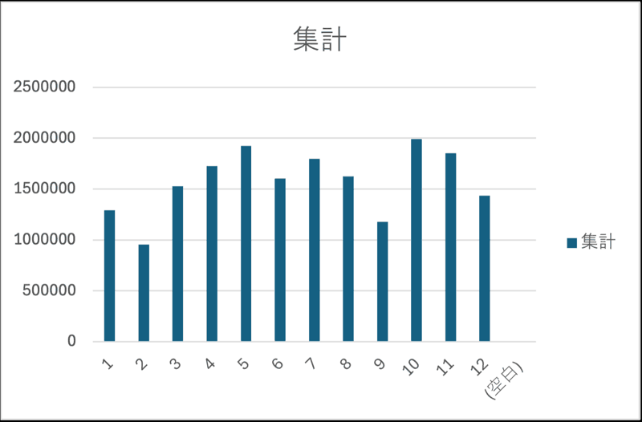
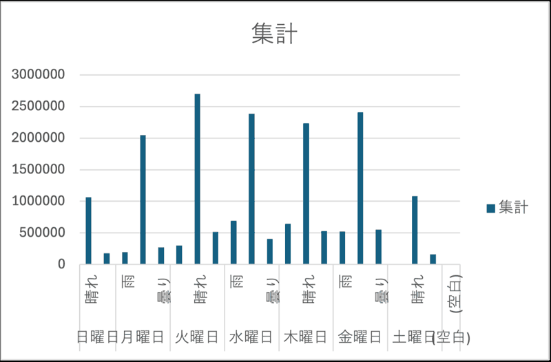
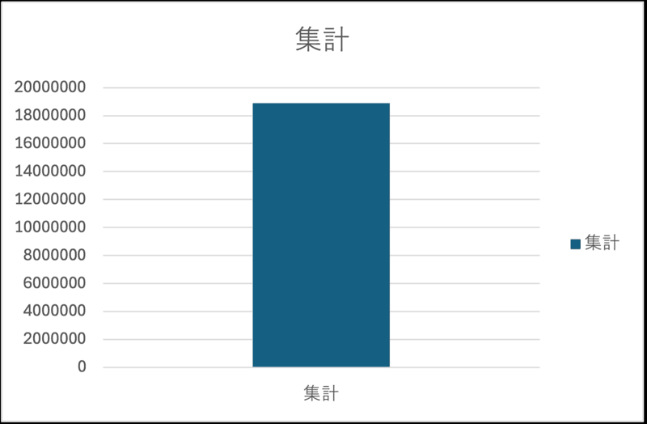
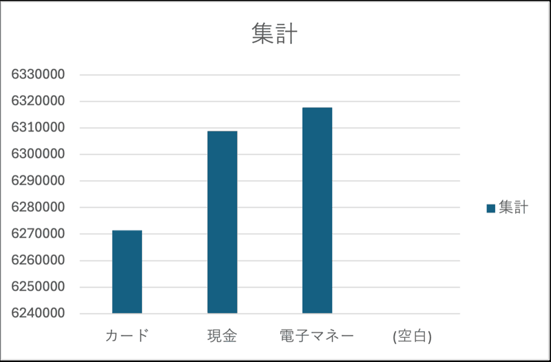
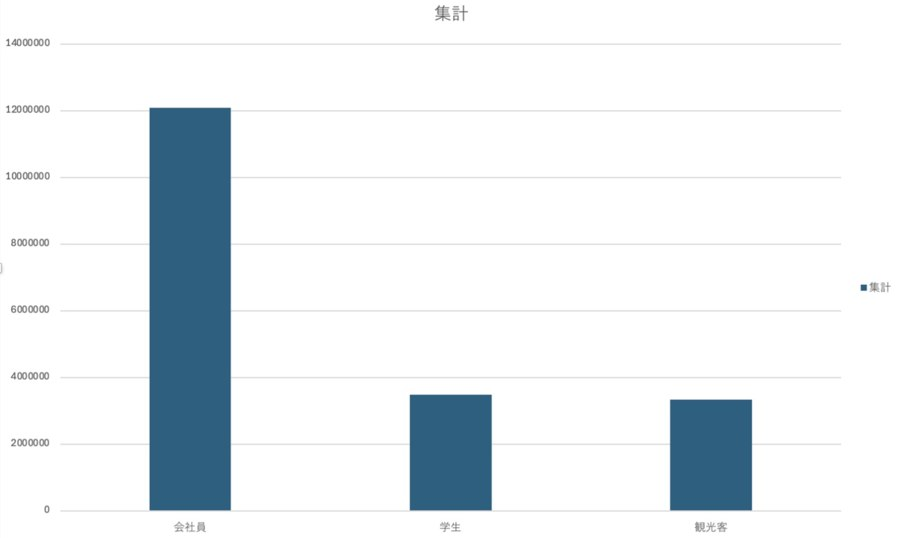
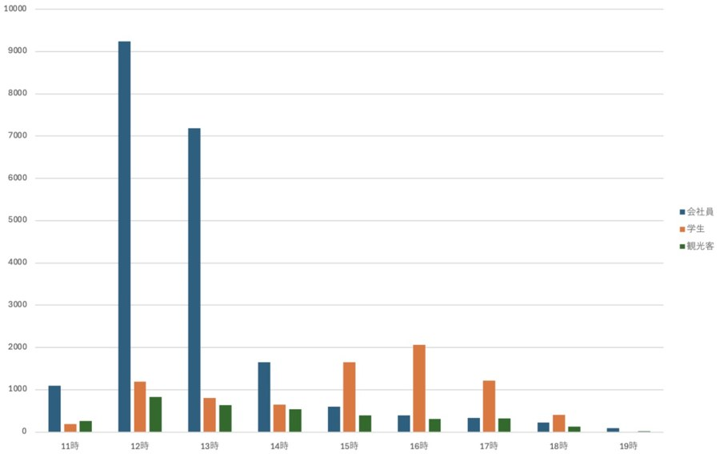
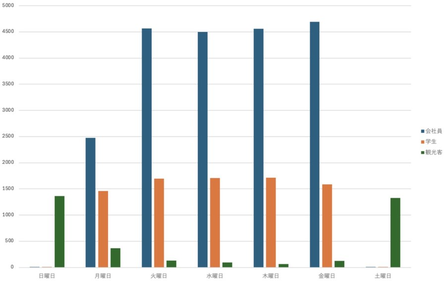
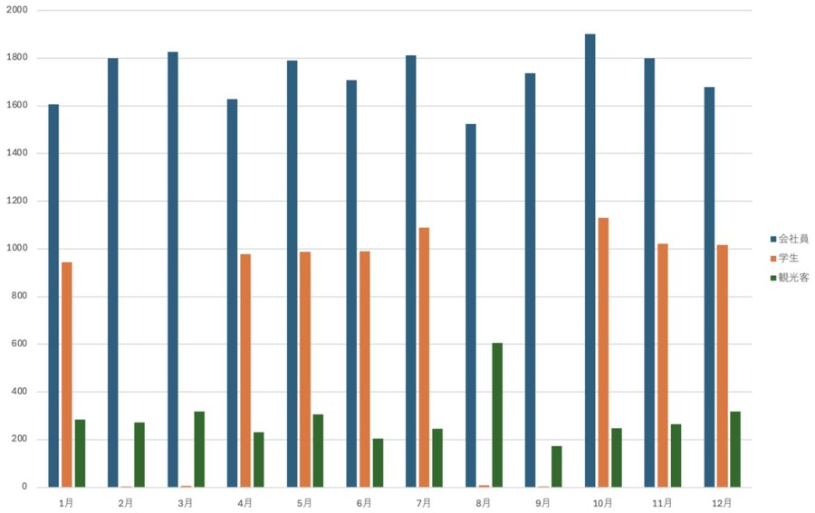
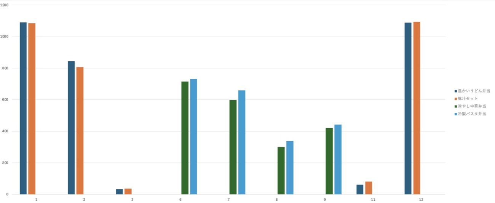

データ分析：お弁当のPOSデータ
データの概要
- 期間：2024年1月1日〜12月31日（1年間）
- 販売記録：32,459件（お弁当1個につき1件）
- 商品：24種類（お弁当・麺類・セット）
- 項目：日時、曜日、天気、最高気温、最低気温、商品名、料金、カロリー、種類、支払い方法、顧客タイプ（会社員・学生・観光客）
分かったこと
- 1年間の売上の合計は約1,890万円。
- 月別の売上は、10月が約199万円で最も多く、2月が約96万円で最も少ない。5月・11月も多い。
- 顧客タイプ別の売上は、会社員が約1,208万円で最も多く、全体の約6割を占める。学生は約349万円、観光客は約333万円。
- 支払い方法別の売上は、カード約627万円、現金約631万円、電子マネー約632万円で、ほとんど差がない。グラフの縦軸が624万円から始まっているので、差が大きく見えるだけ。
- 曜日・天気別では、どの曜日も晴れの日の売上が最も多い。火曜日の晴れが約270万円で最大。日曜日と土曜日は、晴れでも約106〜108万円で、火〜金の約半分以下。土日は、雨の日の売上がほとんどない。
- 時間帯別の販売数は、12時が最も多く、次に13時。この2時間に、会社員が約9,200個と約7,200個と集中している。14時以降は大きく減り、19時はほとんど売れない。
- 学生は、会社員と時間帯がずれている。15時〜16時に多く、16時が最多（約2,060個）。
- 曜日別の販売数は、火〜金は会社員が約4,500〜4,700個で、学生が約1,600〜1,700個。観光客は約70〜130個しかいない。
- 月曜日は、会社員が約2,470個で、火〜金の約半分。
- 日曜日と土曜日は、会社員と学生がほとんどおらず、観光客だけが約1,300個以上で、最も多い。
- 月別の販売数は、会社員が毎月約1,500〜1,900個で安定している。
- 学生は、2月・3月・8月・9月にほとんどいない。
- 観光客は、8月だけ約600個で、ほかの月（約170〜320個）の約2倍。
- 温かいメニュー（うどん・豚汁）は、11月〜3月だけ売られていて、12月と1月が最も多い（各約1,090個）。冷たいメニュー（冷やし中華・冷製パスタ）は、6月〜9月だけ売られていて、6月が最も多い。4月・5月・10月は、どちらも売られていない。
ピボットグラフ
月別の売上（円）

曜日・天気別の売上（円）

売上の合計（円）

支払い方法別の売上（円）

顧客タイプ別の売上（円）

時間帯別・顧客タイプ別の販売数（個）

曜日別・顧客タイプ別の販売数（個）

月別・顧客タイプ別の販売数（個）

月別の温かいメニュー・冷たいメニューの販売数（個）
